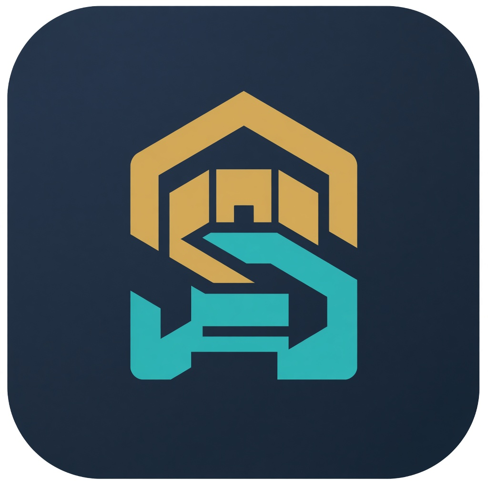

Backend & frameworks
C#
.NET / ASP.NET Core
Web API
EF Core
LINQ
Minimal APIs
Software Engineer & Backend Developer. I design maintainable .NET systems — Clean Architecture, modular monoliths, and high-throughput APIs — then ship them as products people actually use.

Results-driven software engineer specializing in the C# / .NET ecosystem, with a track record of designing maintainable architectures, high-throughput APIs, and enterprise systems. Proven work in Clean Architecture, Modular Monolith, and Domain-Driven Design. Comfortable from schema design and index tuning in PostgreSQL & SQL Server, to distributed caching with Redis and background execution with Hangfire. Backend-first, with full-stack range across React, React Native, and product design in Figma.
Co-Founder & Full-Stack Engineer · EdTech ecosystem
Co-Founder & Product Designer · Desktop-first RTL product

Product Designer & Full-Stack Developer
B.Sc. Computer Engineering · Tabriz, Iran
Coursework: Data Structures, Algorithms, Database Systems, Software Engineering, Operating Systems.
Languages: Persian (native), English (professional working proficiency — technical reading & writing).
Backend roles, architecture reviews, or a product that needs a serious API.